CODING AGENTS AS PIXEL WORLD MODELS
traex/DeepSeek-V4.1-Flash · 0130
点击播放 · 原生 RGB 像素
逐轮保存的候选
回放视频、检查图与代码变化。
每份候选均可单独播放。实际图片检查记录在下方工具轨迹中。
候选 01播放与检查图
点击播放 · 原生 RGB 像素
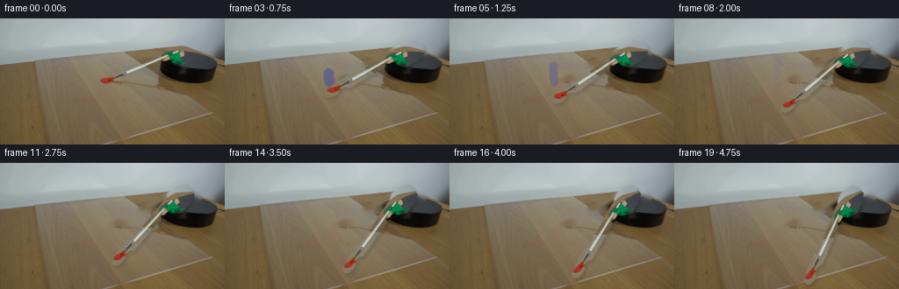
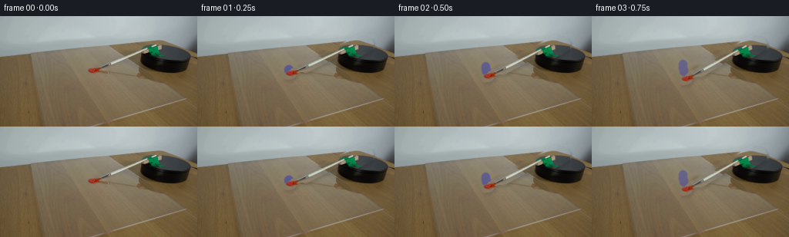
展开代码变化
--- 上一保存版本 +++ 本次保存版本 @@ -0,0 +1,240 @@ +from pathlib import Path + +import cv2 +import numpy as np + +import artifact_io + + +ROOT = Path(__file__).resolve().parent +FRAME_COUNT = 20 +WIDTH = 256 +HEIGHT = 144 +PIVOT = (211.5, 55.5) +FINAL_ANGLE = 42.0 + + +def make_brush_mask(image): + """Silhouette of the brush and its clip, excluding the turntable.""" + mask = np.zeros(image.shape[:2], np.uint8) + + # Bristles and the paint-loaded tip. + cv2.ellipse(mask, (119, 73), (9, 5), -20, 0, 360, 255, -1) + cv2.line(mask, (123, 69), (140, 61), 255, 8, cv2.LINE_AA) + + # Metal ferrule and wooden handle. + cv2.fillPoly( + mask, + [ + np.array( + [ + [132, 66], + [140, 60], + [184, 38], + [195, 33], + [201, 35], + [201, 41], + [194, 46], + [147, 67], + [139, 71], + ], + np.int32, + ) + ], + 255, + ) + + # Orange clamp and green mounting clip. + cv2.fillPoly( + mask, + [ + np.array( + [ + [190, 41], + [196, 33], + [204, 27], + [216, 25], + [226, 28], + [229, 34], + [228, 42], + [219, 49], + [208, 54], + [199, 53], + [192, 48], + ], + np.int32, + ) + ], + 255, + ) + + # Pick up the strongly colored clamp pixels that sit just beyond the + # hand-drawn silhouette, while keeping the black turntable untouched. + b, g, r = cv2.split(image) + y, x = np.indices(mask.shape) + region = (x >= 108) & (x <= 232) & (y >= 23) & (y <= 82) + green = (g.astype(np.int16) > r.astype(np.int16) + 13) & ( + g.astype(np.int16) > b.astype(np.int16) + 8 + ) + orange = (r.astype(np.int16) > g.astype(np.int16) + 34) & ( + r > 115 + ) & (g < 125) + mask[region & (green | orange)] = 255 + + mask = cv2.morphologyEx(mask, cv2.MORPH_CLOSE, np.ones((3, 3), np.uint8)) + return mask + + +def make_paint_blob(image, brush_mask): + """Extract the red dollop as a small RGBA decal.""" + hsv = cv2.cvtColor(image, cv2.COLOR_BGR2HSV) + y, x = np.indices(image.shape[:2]) + red = ( + (hsv[:, :, 0] < 15) + & (hsv[:, :, 1] > 120) + & (hsv[:, :, 2] > 70) + & (x >= 110) + & (x <= 134) + & (y >= 62) + & (y <= 82) + ) + alpha = np.where(red, 255, 0).astype(np.uint8) + alpha = cv2.morphologyEx(alpha, cv2.MORPH_CLOSE, np.ones((3, 3), np.uint8)) + alpha = cv2.dilate(alpha, np.ones((2, 2), np.uint8)) + alpha = cv2.GaussianBlur(alpha, (3, 3), 0.45) + + # Do not include the brush's opaque metal/wood body in the paint decal. + alpha[brush_mask > 0] = np.minimum( + alpha[brush_mask > 0], + np.where(red[brush_mask > 0], 210, 0).astype(np.uint8), + ) + return image, alpha + + +def composite_rgba(background, rgba, alpha): + a = alpha.astype(np.float32) / 255.0 + out = background.astype(np.float32) * (1.0 - a[:, :, None]) + out += rgba.astype(np.float32) * a[:, :, None] + return np.clip(out, 0, 255).astype(np.uint8) + + +def draw_dollop(background, paint, alpha, frame_index): + """Keep the dollop on the acrylic and add a short contact smear.""" + t = frame_index / (FRAME_COUNT - 1) + result = background.copy() + + # Slight flattening makes the paint settle as the brush clears it. + scale_x = 1.0 + 0.10 * min(t / 0.30, 1.0) + scale_y = 1.0 - 0.08 * min(t / 0.30, 1.0) + matrix = cv2.getRotationMatrix2D((120.5, 72.0), 0.0, 1.0) + matrix[0, 0] = scale_x + matrix[1, 1] = scale_y + warped_paint = cv2.warpAffine( + paint, + matrix, + (WIDTH, HEIGHT), + flags=cv2.INTER_LINEAR, + borderMode=cv2.BORDER_CONSTANT, + borderValue=(0, 0, 0), + ) + warped_alpha = cv2.warpAffine( + alpha, + matrix, + (WIDTH, HEIGHT), + flags=cv2.INTER_LINEAR, + borderMode=cv2.BORDER_CONSTANT, + borderValue=0, + ) + result = composite_rgba(result, warped_paint, warped_alpha) + + if frame_index > 0: + # A translucent red tail records the first few degrees of contact. + smear_alpha = np.zeros((HEIGHT, WIDTH), np.uint8) + radius = 94.0 + theta0 = np.deg2rad(169.6) + angle = np.deg2rad(FINAL_ANGLE * t) + samples = 8 + for i in range(samples + 1): + theta = theta0 + angle * i / samples + px = int(round(PIVOT[0] + radius * np.cos(theta))) + py = int(round(PIVOT[1] + radius * np.sin(theta))) + width = max(2, int(round(5.0 - 2.0 * t))) + cv2.circle(smear_alpha, (px, py), width, 255, -1, cv2.LINE_AA) + smear_alpha = cv2.GaussianBlur(smear_alpha, (3, 3), 0.55) + fade = 0.56 * max(0.0, 1.0 - t / 0.46) + smear_alpha = (smear_alpha.astype(np.float32) * fade).astype(np.uint8) + smear = np.zeros_like(result) + smear[:, :] = (34, 48, 191) # BGR: warm red acrylic paint. + result = composite_rgba(result, smear, smear_alpha) + + return result + + +def rotate_rgba(rgba, alpha, angle): + matrix = cv2.getRotationMatrix2D(PIVOT, angle, 1.0) + rotated = cv2.warpAffine( + rgba, + matrix, + (WIDTH, HEIGHT), + flags=cv2.INTER_CUBIC, + borderMode=cv2.BORDER_CONSTANT, + borderValue=(0, 0, 0), + ) + rotated_alpha = cv2.warpAffine( + alpha, + matrix, + (WIDTH, HEIGHT), + flags=cv2.INTER_LINEAR, + borderMode=cv2.BORDER_CONSTANT, + borderValue=0, + ) + return rotated, rotated_alpha + + +def add_soft_shadow(background, alpha): + shadow_alpha = cv2.GaussianBlur(alpha, (7, 7), 1.5) + shadow_alpha = (shadow_alpha.astype(np.float32) * 0.14).astype(np.uint8) + shadow = np.zeros_like(background) + shadow[:, :] = (24, 27, 28) + shadow = np.roll(shadow, (3, 2), axis=(0, 1)) + shadow_alpha = np.roll(shadow_alpha, (3, 2), axis=(0, 1)) + return composite_rgba(background, shadow, shadow_alpha) + + +def generate(): + first = cv2.imread(str(ROOT / "first_frame.png"), cv2.IMREAD_COLOR) + if first is None: + raise FileNotFoundError(ROOT / "first_frame.png") + first = cv2.cvtColor(first, cv2.COLOR_BGR2RGB) + + brush_mask = make_brush_mask(cv2.cvtColor(first, cv2.COLOR_RGB2BGR)) + # A one-pixel feather removes the cutout's stair-step edge. + brush_alpha = cv2.GaussianBlur(brush_mask, (3, 3), 0.42) + + # Fill only the brush footprint; the black turntable remains intact. + background_bgr = cv2.inpaint( + cv2.cvtColor(first, cv2.COLOR_RGB2BGR), + cv2.dilate(brush_mask, np.ones((3, 3), np.uint8)), + 5, + cv2.INPAINT_TELEA, + ) + background = cv2.cvtColor(background_bgr, cv2.COLOR_BGR2RGB) + + paint, paint_alpha = make_paint_blob(first, brush_mask) + frames = np.empty((FRAME_COUNT, HEIGHT, WIDTH, 3), np.uint8) + frames[0] = first + + for index in range(1, FRAME_COUNT): + t = index / (FRAME_COUNT - 1) + angle = FINAL_ANGLE * t + canvas = draw_dollop(background, paint, paint_alpha, index) + rotated_brush, rotated_alpha = rotate_rgba(first, brush_alpha, angle) + canvas = add_soft_shadow(canvas, rotated_alpha) + canvas = composite_rgba(canvas, rotated_brush, rotated_alpha) + frames[index] = canvas + + artifact_io.save(frames, ROOT) + + +if __name__ == "__main__": + generate()
可观测工具轨迹
实际执行的命令与返回图片。
命令 1exit 0
/bin/bash -c "pwd && rg --files -g 'prompt.txt' -g 'GENERATION_RULES.md' -g '*.py' -g '*.sh' -g '*.json' -g '*.md' | sed -n '1,160p'"
命令 2exit 0
/bin/bash -c "sed -n '1,240p' prompt.txt"
命令 3exit 0
/bin/bash -c "sed -n '1,280p' GENERATION_RULES.md"
命令 4exit 127
/bin/bash -c 'ls -la && file first_frame.png && ffprobe -v error -show_entries stream=width,height,r_frame_rate,duration -of default=noprint_wrappers=1 first_frame.png'
命令 5exit 0
/bin/bash -c "sed -n '1,240p' artifact_io.py"
命令 6exit 0
/bin/bash -c "python - <<'PY'
from PIL import Image
im=Image.open('first_frame.png')
print(im.mode, im.size)
im.crop((90,10,256,100)).resize((996,540)).save('.tmp/crop.png')
PY"命令 7exit 0
/bin/bash -c "ffmpeg -version | head -n 3 || true; python - <<'PY' import importlib.util for m in ['imageio','moviepy']: print(m, bool(importlib.util.find_spec(m))) PY"
命令 8exit 0
/bin/bash -c "python - <<'PY' mods=['cv2','scipy','skimage','numpy','PIL'] for m in mods: try: mod=__import__(m); print(m, getattr(mod,'__version__','ok')) except Exception as e: print(m, 'ERR', e) PY"
命令 9exit 0
/bin/bash -c "python - <<'PY'
from PIL import Image
im=Image.open('first_frame.png')
im.crop((100,25,240,90)).resize((1120,520),Image.Resampling.NEAREST).save('.tmp/crop_nearest.png')
PY"命令 10exit 0
/bin/bash -c "python - <<'PY'
import cv2, numpy as np
from PIL import Image
im=cv2.imread('first_frame.png')
hsv=cv2.cvtColor(im,cv2.COLOR_BGR2HSV)
# broad region
roi=np.zeros(im.shape[:2],np.uint8)
poly=np.array([[110,58],[124,54],[190,30],[224,29],[228,60],[201,64],[146,70],[136,80],[116,78]],np.int32)
cv2.fillPoly(roi,[poly],255)
# color clues in region
b,g,r=cv2.split(im)
green=((g.astype(int)>r.astype(int)+12)&(g.astype(int)>b.astype(int)+5)&(roi>0)).astype(np.uint8)*255
bright=((r>155)&(g>150)&(b>145)&(roi>0)).astype(np.uint8)*255
metal=((abs(r.astype(int)-g.astype(int))<35)&(r>85)&(g>80)&(roi>0)).astype(np.uint8)*255
orange=((r.astype(int)>g.astype(int)+25)&(r>110)&(g<150)&(roi>0)).astype(np.uint8)*255
# Draw generous manual stroke line
mask=np.zeros_like(roi)
cv2.line(mask,(121,69),(198,42),255,14,cv2.LINE_AA)
cv2.ellipse(mask,(206,44),(16,14),-18,0,360,255,-1)
mask=cv2.bitwise_and(mask,roi)
# include color pixels only close to stroke
near=cv2.dilate(mask,np.ones((5,5),np.uint8))
mask=cv2.bitwise_or(mask,cv2.bitwise_and(cv2.bitwise_or(cv2.bitwise_or(green,bright),orange),near))
# green clip broaden
mask=cv2.bitwise_or(mask,green)
mask=cv2.morphologyEx(mask,cv2.MORPH_CLOSE,np.ones((3,3),np.uint8))
mask=cv2.dilate(mask,np.ones((2,2),np.uint8))
vis=im.copy(); vis[mask>0]=(0.35*vis[mask>0]+0.65*np.array([0,255,255])).astype(np.uint8)
cv2.imwrite('.tmp/mask_vis.png',vis)
cv2.imwrite('.tmp/mask.png',mask)
PY"命令 11exit 0
/bin/bash -c "python - <<'PY'
import cv2, numpy as np
from PIL import Image
im=cv2.imread('first_frame.png')
h,w=im.shape[:2]
broad=np.zeros((h,w),np.uint8)
# object envelope + shadows
poly=np.array([[111,76],[110,66],[188,34],[195,23],[226,26],[229,51],[220,61],[145,73],[132,83],[117,82]],np.int32)
cv2.fillPoly(broad,[poly],255)
cv2.line(broad,(116,73),(190,45),255,13,cv2.LINE_AA)
cv2.ellipse(broad,(119,74),(9,7),0,0,360,255,-1)
bg=cv2.inpaint(im,broad,4,cv2.INPAINT_TELEA)
diff=np.linalg.norm(im.astype(float)-bg.astype(float),axis=2)
a=np.clip((diff-8)/16,0,1)
a=(a*255).astype(np.uint8)
a=cv2.bitwise_and(a,broad)
a=cv2.morphologyEx(a,cv2.MORPH_CLOSE,np.ones((3,3),np.uint8))
# remove weak specks
num,lab,stats,_=cv2.connectedComponentsWithStats((a>30).astype(np.uint8),8)
keep=np.zeros_like(a)
for i in range(1,num):
if stats[i,cv2.CC_STAT_AREA]>=8: keep[lab==i]=a[lab==i]
a=cv2.GaussianBlur(keep,(3,3),0.6)
rgba=np.dstack([im,a])
cv2.imwrite('.tmp/broad.png',broad)
cv2.imwrite('.tmp/bg.png',bg)
cv2.imwrite('.tmp/alpha.png',a)
vis=im.copy(); vis[a>0]=(vis[a>0]*.25+np.array([0,255,255])*.75).astype(np.uint8)
cv2.imwrite('.tmp/alpha_vis.png',vis)
# rotate 0 and 35
for ang in [10,25,40]:
M=cv2.getRotationMatrix2D((215,55),ang,1.0)
rot=cv2.warpAffine(rgba,M,(w,h),flags=cv2.INTER_LINEAR,borderMode=cv2.BORDER_REFLECT)
out=bg.astype(float)*(1-rot[:,:,3:4]/255)+rot[:,:,:3].astype(float)*(rot[:,:,3:4]/255)
cv2.imwrite(f'.tmp/rot{ang}.png',out.astype(np.uint8))
PY"命令 12exit 0
/bin/bash -c "python - <<'PY'
import cv2
im=cv2.imread('first_frame.png')
cv2.imwrite('.tmp/bg_small.png',cv2.resize(cv2.imread('.tmp/bg.png'),(512,288),interpolation=cv2.INTER_NEAREST))
PY"命令 13exit 0
/bin/bash -c "python - <<'PY'
from PIL import Image
for n in ['bg','rot25','rot40','first_frame']:
im=Image.open(('.tmp/' if n"'!='"'first_frame' else '')+n+'.png')
im.crop((95,15,245,90)).resize((900,450),Image.Resampling.NEAREST).save(f'.tmp/{n}_zoom.png')
PY"命令 14exit 0
/bin/bash -c "python - <<'PY'
import cv2, numpy as np
im=cv2.imread('first_frame.png'); hsv=cv2.cvtColor(im,cv2.COLOR_BGR2HSV)
for y,x in [(73,118),(72,119),(71,120),(74,116),(70,121),(45,190),(44,195),(34,190),(53,200),(54,210),(57,220),(60,225),(40,205)]:
print((x,y), im[y,x].tolist(), hsv[y,x].tolist())
PY"命令 15exit 0
/bin/bash -c "python - <<'PY'
import cv2, numpy as np
im=cv2.imread('first_frame.png')
h,w=im.shape[:2]
# mask carefully bounded by visible brush/green clamp. Brush body is polygon and bristles
m=np.zeros((h,w),np.uint8)
# bristle: tip at 116,76 to ferrule at 132,69
cv2.line(m,(116,75),(132,69),255,10,cv2.LINE_AA)
cv2.ellipse(m,(116,75),(5,4),-22,0,360,255,-1)
# ferrule and metal neck
poly=np.array([[129,71],[130,67],[138,62],[144,60],[147,61],[139,68],[137,72]],np.int32)
cv2.fillPoly(m,[poly],255)
# wooden handle
poly=np.array([[140,65],[183,47],[194,40],[199,41],[196,47],[146,69]],np.int32)
cv2.fillPoly(m,[poly],255)
# green clip and orange body
poly=np.array([[190,42],[198,35],[213,28],[226,32],[228,39],[219,44],[208,50],[202,53],[193,48]],np.int32)
cv2.fillPoly(m,[poly],255)
# base ellipse under clamp
cv2.ellipse(m,(213,46),(16,11),-12,0,360,255,-1)
m=cv2.bitwise_and(m, (np.indices((h,w))[1]<231).astype(np.uint8)*255)
# avoid turntable black entirely except top boundary under object
m[58:,:]=cv2.bitwise_and(m[58:,:],0)
cv2.imwrite('.tmp/manual_mask.png',m)
vis=im.copy(); vis[m>0]=(vis[m>0]*.15+np.array([0,255,255])*.85).astype(np.uint8)
cv2.imwrite('.tmp/manual_mask_vis.png',vis)
bg=cv2.inpaint(im,m,5,cv2.INPAINT_TELEA)
cv2.imwrite('.tmp/manual_bg.png',bg)
for ang in [10,20,30,40,50,60]:
M=cv2.getRotationMatrix2D((214,55),ang,1.0)
rot=cv2.warpAffine(im,M,(w,h),flags=cv2.INTER_LINEAR,borderMode=cv2.BORDER_REFLECT)
alpha=cv2.warpAffine(m,M,(w,h),flags=cv2.INTER_LINEAR,borderMode=cv2.BORDER_CONSTANT,borderValue=0).astype(float)/255
out=bg.astype(float)*(1-alpha[:,:,None])+rot.astype(float)*alpha[:,:,None]
cv2.imwrite(f'.tmp/manual_rot{ang}.png',out.astype(np.uint8))
PY"命令 16exit 0
/bin/bash -c "python - <<'PY'
from PIL import Image
for n in ['manual_bg','manual_rot40','manual_rot60']:
im=Image.open('.tmp/'+n+'.png')
im.crop((95,15,245,90)).resize((900,450),Image.Resampling.NEAREST).save('.tmp/'+n+'_zoom.png')
PY"命令 17exit 0
/bin/bash -c "python - <<'PY'
import cv2,numpy as np
im=cv2.imread('first_frame.png')
# Print rough shape boundary via mask rows and selected colors. save color-index
# find red paint cluster near (120,74)
b,g,r=cv2.split(im)
red=((r.astype(int)>g.astype(int)+25)&(r.astype(int)>b.astype(int)+30)&(r>100)).astype(np.uint8)*255
# within area only
keep=np.zeros_like(red); keep[60:85,105:140]=255
red=cv2.bitwise_and(red,keep)
n,l,s,c=cv2.connectedComponentsWithStats((red>0).astype(np.uint8),8)
for i in range(1,n):
if s[i,4]>3: print('red',s[i].tolist(),c[i].tolist())
cv2.imwrite('.tmp/red.png',red)
# get rows of paint color min max
ys,xs=np.where(red>0)
print('bbox',xs.min(),xs.max(),ys.min(),ys.max())
PY"命令 18exit 0
/bin/bash -c "python - <<'PY'
from PIL import Image
im=Image.open('first_frame.png')
im.crop((104,55,238,88)).resize((1072,264),Image.Resampling.NEAREST).save('.tmp/detail.png')
PY"命令 19exit 0
/bin/bash -c "python - <<'PY'
import cv2,numpy as np
im=cv2.imread('first_frame.png')
h,w=im.shape[:2]
# mask exact object with colors plus thin outline. Use a hand shape more detailed
m=np.zeros((h,w),np.uint8)
# paint tip / bristles as orange-red, excludes table red? within region
hsv=cv2.cvtColor(im,cv2.COLOR_BGR2HSV)
red=((hsv[:,:,0]<15)&(hsv[:,:,1]>120)&(hsv[:,:,2]>75)&(np.indices((h,w))[1]>=110)&(np.indices((h,w))[1]<133)&(np.indices((h,w))[0]>=63)&(np.indices((h,w))[0]<82))
m[red]=255
# metal brush body by line
cv2.line(m,(128,69),(143,62),255,5,cv2.LINE_AA)
# wooden handle polygon
poly=np.array([[139,64],[148,59],[185,43],[195,38],[199,41],[198,45],[193,48],[148,66],[142,69]],np.int32)
cv2.fillPoly(m,[poly],255)
# green clip, orange clamp
poly=np.array([[188,45],[194,35],[204,30],[218,26],[226,29],[229,35],[228,42],[222,47],[210,52],[202,55],[194,51]],np.int32)
cv2.fillPoly(m,[poly],255)
# base round
cv2.ellipse(m,(211,48),(15,10),-10,0,360,255,-1)
# avoid anything on black disk below 57
m[58:,:]=0
# exclude weird below object
cv2.imwrite('.tmp/mask2.png',m)
bg=cv2.inpaint(im,m,4,cv2.INPAINT_TELEA)
cv2.imwrite('.tmp/bg2.png',bg)
# feather composite rotation using both image and mask
for ang in [10,20,30,40,50,60,70]:
M=cv2.getRotationMatrix2D((213,56),ang,1.0)
rot=cv2.warpAffine(im,M,(w,h),flags=cv2.INTER_CUBIC,borderMode=cv2.BORDER_REFLECT)
a=cv2.warpAffine(m,M,(w,h),flags=cv2.INTER_LINEAR,borderMode=cv2.BORDER_CONSTANT,borderValue=0).astype(np.float32)/255
# tighten alpha at edges by using smooth
a=cv2.GaussianBlur(a,(3,3),0.45)
out=bg.astype(np.float32)*(1-a[:,:,None])+rot.astype(np.float32)*a[:,:,None]
cv2.imwrite(f'.tmp/r2_{ang}.png',np.clip(out,0,255).astype(np.uint8))
PY"命令 20exit 0
/bin/bash -c "python - <<'PY'
from PIL import Image
for n in ['mask2','bg2','r2_40','r2_60']:
im=Image.open('.tmp/'+n+'.png')
im.crop((95,15,245,90)).resize((900,450),Image.Resampling.NEAREST).save('.tmp/'+n+'_zoom.png')
PY"命令 21exit 0
/bin/bash -c "python - <<'PY'
import cv2,numpy as np
im=cv2.imread('first_frame.png')
# print columns/rows around brush to understand geometry
# We'll use segmentation in a broad region with GrabCut maybe
mask=np.zeros(im.shape[:2],np.uint8)
poly=np.array([[113,77],[112,68],[186,36],[189,27],[226,28],[228,48],[221,55],[145,70],[132,80],[119,80]],np.int32)
mask[:]=0
cv2.fillPoly(mask,[poly],1)
bgd=np.zeros((1,65),np.float64); fgd=np.zeros((1,65),np.float64)
cv2.grabCut(im,mask,None,bgd,fgd,5,cv2.GC_INIT_WITH_MASK)
out=np.where((mask==cv2.GC_FGD)|(mask==cv2.GC_PR_FGD),255,0).astype(np.uint8)
out=cv2.morphologyEx(out,cv2.MORPH_CLOSE,np.ones((3,3),np.uint8))
# keep only components overlapping poly interior
num,lab,stats,_=cv2.connectedComponentsWithStats((out>0).astype(np.uint8),8)
sel=np.zeros_like(out)
for i in range(1,num):
if stats[i,4]>8: sel[lab==i]=out[lab==i]
cv2.imwrite('.tmp/grab_mask.png',sel)
bg=cv2.inpaint(im,sel,4,cv2.INPAINT_TELEA)
cv2.imwrite('.tmp/grab_bg.png',bg)
# visual
vis=im.copy(); vis[sel>0]=(vis[sel>0]*.2+np.array([0,255,255])*.8).astype(np.uint8)
cv2.imwrite('.tmp/grab_vis.png',vis)
PY"命令 22exit 0
/bin/bash -c "python - <<'PY'
import cv2,numpy as np
im=cv2.imread('first_frame.png')
mask=cv2.imread('.tmp/grab_mask.png',0)
# Fill black-ish pixels near object that weren't selected: around handle/clamp; only if dark and within tight envelope
h,w=mask.shape
env=np.zeros_like(mask)
poly=np.array([[112,76],[112,67],[185,36],[190,27],[226,28],[229,49],[220,55],[145,71],[132,80],[117,80]],np.int32)
cv2.fillPoly(env,[poly],255)
dark=((im.max(axis=2)<85)&(env>0)).astype(np.uint8)*255
# include dark near existing mask
near=cv2.dilate(mask,np.ones((9,9),np.uint8))
mask=cv2.bitwise_or(mask,cv2.bitwise_and(dark,near))
# Also green, orange, wood bright colors
b,g,r=cv2.split(im)
green=((g.astype(int)>r.astype(int)+15)&(g.astype(int)>b.astype(int)+8)&(env>0)).astype(np.uint8)*255
orange=((r.astype(int)>g.astype(int)+35)&(r>120)&(g<130)&(env>0)).astype(np.uint8)*255
mask=cv2.bitwise_or(mask,green)
mask=cv2.bitwise_or(mask,orange)
mask=cv2.morphologyEx(mask,cv2.MORPH_CLOSE,np.ones((3,3),np.uint8))
mask=cv2.bitwise_and(mask,env)
cv2.imwrite('.tmp/final_mask.png',mask)
bg=cv2.inpaint(im,mask,5,cv2.INPAINT_TELEA)
cv2.imwrite('.tmp/final_bg.png',bg)
vis=im.copy(); vis[mask>0]=(vis[mask>0]*.2+np.array([0,255,255])*.8).astype(np.uint8)
cv2.imwrite('.tmp/final_vis.png',vis)
# composite rotations, original object crop translation preserves detail
for ang in [10,20,30,40,50,60,70]:
M=cv2.getRotationMatrix2D((212,55),ang,1.0)
rot=cv2.warpAffine(im,M,(w,h),flags=cv2.INTER_CUBIC,borderMode=cv2.BORDER_REFLECT)
a=cv2.warpAffine(mask,M,(w,h),flags=cv2.INTER_LINEAR,borderMode=cv2.BORDER_CONSTANT,borderValue=0).astype(np.float32)/255
a=cv2.GaussianBlur(a,(3,3),0.4)
out=bg.astype(np.float32)*(1-a[:,:,None])+rot.astype(np.float32)*a[:,:,None]
cv2.imwrite(f'.tmp/final_rot{ang}.png',np.clip(out,0,255).astype(np.uint8))
PY"命令 23exit 0
/bin/bash -c "python - <<'PY'
from PIL import Image
for n in ['final_mask','final_bg','final_rot40','final_rot70']:
im=Image.open('.tmp/'+n+'.png')
im.crop((95,15,245,90)).resize((900,450),Image.Resampling.NEAREST).save('.tmp/'+n+'_zoom.png')
PY"命令 24exit 0
/bin/bash -c "python - <<'PY'
import cv2,numpy as np
im=cv2.imread('first_frame.png')
h,w=im.shape[:2]
m=np.zeros((h,w),np.uint8)
# precise envelope based on original
poly=np.array([[112,76],[111,67],[124,62],[184,34],[188,26],[222,26],[228,30],[230,43],[227,51],[215,57],[207,59],[147,72],[133,82],[117,81]],np.int32)
cv2.fillPoly(m,[poly],255)
# subtract a couple clear background zones? Let's keep all
# use only original mask but anti-alias boundary by blur later
cv2.imwrite('.tmp/env.png',m)
bg=cv2.inpaint(im,m,7,cv2.INPAINT_TELEA)
# enhance bg from donor: copy horizontal strip from right into object area? not needed
cv2.imwrite('.tmp/env_bg.png',bg)
for ang in [15,30,45,60,75,90]:
M=cv2.getRotationMatrix2D((212,54),ang,1.0)
rot=cv2.warpAffine(im,M,(w,h),flags=cv2.INTER_CUBIC,borderMode=cv2.BORDER_REFLECT)
a=cv2.warpAffine(m,M,(w,h),flags=cv2.INTER_LINEAR,borderMode=cv2.BORDER_CONSTANT,borderValue=0).astype(np.float32)/255
a=cv2.GaussianBlur(a,(3,3),0.35)
out=bg.astype(np.float32)*(1-a[:,:,None])+rot.astype(np.float32)*a[:,:,None]
cv2.imwrite(f'.tmp/env_rot{ang}.png',np.clip(out,0,255).astype(np.uint8))
PY"命令 25exit 0
/bin/bash -c "python - <<'PY'
import cv2,numpy as np
im=cv2.imread('first_frame.png')
# inspect selected mask boundaries with crop env visual
m=cv2.imread('.tmp/env.png',0)
vis=im.copy();vis[m>0]=(vis[m>0]*.2+np.array([0,255,255])*.8).astype(np.uint8)
cv2.imwrite('.tmp/env_vis.png',vis)
PY"命令 26exit 0
/bin/bash -c "python - <<'PY'
from PIL import Image
im=Image.open('first_frame.png')
im.crop((108,23,235,84)).resize((1016,488),Image.Resampling.NEAREST).save('.tmp/detail2.png')
PY"命令 27exit 0
/bin/bash -c "python - <<'PY'
from PIL import Image
for n in ['env_bg','env_rot30','env_rot60','env_rot90']:
im=Image.open('.tmp/'+n+'.png')
im.crop((95,10,245,92)).resize((900,492),Image.Resampling.NEAREST).save('.tmp/'+n+'_zoom.png')
PY"命令 28exit 0
/bin/bash -c "python generate.py && python - <<'PY'
import numpy as np
from PIL import Image
x=np.load('pixels.npz')['pixels']
print(x.shape, x.dtype)
# verify frame zero exact
first=np.array(Image.open('first_frame.png'))
import artifact_io
# decode packed
arr=np.stack([((x>>16)&255).astype('uint8'),((x>>8)&255).astype('uint8'),(x&255).astype('uint8')],axis=-1).transpose(2,0,1,3)
print('frame0 identical',np.array_equal(arr[0],first))
for i in [0,1,5,10,15,19]:
Image.open(f'frames/{i:02d}.png').resize((1024,576),Image.Resampling.NEAREST).save(f'.tmp/frame_{i:02d}_large.png')
PY"命令 29exit 0
/bin/bash -c "python - <<'PY'
from PIL import Image
for i in [1,3,5,10,15,19]:
im=Image.open(f'frames/{i:02d}.png')
im.crop((90,10,250,95)).resize((960,510),Image.Resampling.NEAREST).save(f'.tmp/f{i:02d}_zoom.png')
PY"命令 30exit 0
/bin/bash -c "python - <<'PY'
import cv2, numpy as np
import generate
im=cv2.imread('first_frame.png')
m=generate.make_brush_mask(im)
print('mask pixels',np.count_nonzero(m), 'bbox',cv2.boundingRect(m))
cv2.imwrite('.tmp/actual_mask.png',m)
a=cv2.GaussianBlur(m,(3,3),.42)
print('alpha max',a.max(),'nonzero',np.count_nonzero(a))
# rotated
rgb=cv2.cvtColor(im,cv2.COLOR_BGR2RGB)
r,aa=generate.rotate_rgba(rgb,a,2.2)
print('rot alpha max',aa.max(),'nonzero',np.count_nonzero(aa), 'bbox',cv2.boundingRect(aa))
PY"命令 31exit 0
/bin/bash -c "python - <<'PY'
from PIL import Image
im=Image.open('first_frame.png')
# frame1 rgb diff stats
f=Image.open('frames/01.png')
import numpy as np
a=np.array(im); b=np.array(f)
print('mean diff',np.abs(a.astype(int)-b.astype(int)).mean(), 'bbox diff')
d=np.max(np.abs(a.astype(int)-b.astype(int)),axis=2)
ys,xs=np.where(d>5); print(xs.min(),xs.max(),ys.min(),ys.max())
# compare expected composite at first frame using cutout at 0
import generate,cv2
bg=cv2.inpaint(cv2.cvtColor(a,cv2.COLOR_RGB2BGR),cv2.dilate(generate.make_brush_mask(cv2.cvtColor(a,cv2.COLOR_RGB2BGR)),np.ones((3,3),np.uint8)),5,cv2.INPAINT_TELEA)
# Need inspect image colors at brush target
for y,x in [(65,170),(66,171),(62,180),(59,190),(53,205),(46,211)]: print((x,y),a[y,x],b[y,x])
PY"命令 32exit 0
/bin/bash -c "python - <<'PY'
from PIL import Image
import numpy as np
a=np.array(Image.open('first_frame.png')).astype(int); b=np.array(Image.open('frames/01.png')).astype(int)
d=np.abs(a-b).max(2)
ys,xs=np.where(d>20)
print('count',len(xs))
# top bbox distribution, print rows minmax
for y in range(20,90):
xx=np.where(d[y]>20)[0]
if len(xx): print(y,xx.min(),xx.max(),len(xx))
Image.fromarray(np.clip(d*5,0,255).astype(np.uint8)).save('.tmp/diff.png')
PY"命令 33exit 0
/bin/bash -c "python - <<'PY'
import cv2,numpy as np,generate
first=cv2.imread('first_frame.png'); first=cv2.cvtColor(first,cv2.COLOR_BGR2RGB)
m=generate.make_brush_mask(cv2.cvtColor(first,cv2.COLOR_RGB2BGR)); a=cv2.GaussianBlur(m,(3,3),.42)
r,ra=generate.rotate_rgba(first,a,2.2105263)
for y,x in [(65,170),(60,180),(55,190),(50,200),(45,211)]: print((x,y),'alpha',ra[y,x],'rgb',r[y,x])
cv2.imwrite('.tmp/rot_alpha.png',ra); cv2.imwrite('.tmp/rot_rgb.png',cv2.cvtColor(r,cv2.COLOR_RGB2BGR))
PY"命令 34exit 0
/bin/bash -c "python - <<'PY'
import cv2,numpy as np,generate
first=cv2.imread('first_frame.png'); first=cv2.cvtColor(first,cv2.COLOR_BGR2RGB)
m=generate.make_brush_mask(cv2.cvtColor(first,cv2.COLOR_RGB2BGR)); a=cv2.GaussianBlur(m,(3,3),.42)
# compare mask before and after rotation
r,ra=generate.rotate_rgba(first,a,2.21)
print('nonwhite before')
ys,xs=np.where(a>20); print(xs.min(),xs.max(),ys.min(),ys.max())
ys,xs=np.where(ra>20); print(xs.min(),xs.max(),ys.min(),ys.max())
# print mask row extents at key rows
for y in [40,50,60,65,70,75]:
for label,mm in [('a',a),('ra',ra)]:
xx=np.where(mm[y]>20)[0]; print(y,label, (xx.min(),xx.max()) if len(xx) else None)
PY"命令 35exit 0
/bin/bash -c "python - <<'PY'
import cv2,numpy as np,generate
first=cv2.imread('first_frame.png'); first=cv2.cvtColor(first,cv2.COLOR_BGR2RGB)
m=generate.make_brush_mask(cv2.cvtColor(first,cv2.COLOR_RGB2BGR)); a=cv2.GaussianBlur(m,(3,3),.42)
r,ra=generate.rotate_rgba(first,a,2.21)
print('alpha range',ra.min(),ra.max(),ra.mean())
print('rgb range',r.min(),r.max(),r.mean())
# save scaled vis
cv2.imwrite('.tmp/ra_vis.png',ra)
PY"命令 36exit 0
/bin/bash -c "python - <<'PY'
import cv2,numpy as np,generate
first=cv2.imread('first_frame.png'); first=cv2.cvtColor(first,cv2.COLOR_BGR2RGB)
m=generate.make_brush_mask(cv2.cvtColor(first,cv2.COLOR_RGB2BGR)); a=cv2.GaussianBlur(m,(3,3),.42)
bg=cv2.cvtColor(cv2.inpaint(cv2.cvtColor(first,cv2.COLOR_RGB2BGR),cv2.dilate(m,np.ones((3,3),np.uint8)),5,cv2.INPAINT_TELEA),cv2.COLOR_BGR2RGB)
paint,pa=generate.make_paint_blob(first,m)
canvas=generate.draw_dollop(bg,paint,pa,1)
r,ra=generate.rotate_rgba(first,a,42/19)
print('ra shape',ra.shape, 'max',ra.max())
canvas=generate.add_soft_shadow(canvas,ra)
canvas=generate.composite_rgba(canvas,r,ra)
cv2.imwrite('.tmp/repro1.png',cv2.cvtColor(canvas,cv2.COLOR_RGB2BGR))
print('samples',canvas[60,180],canvas[50,200])
print('generated samples')
f=cv2.imread('frames/01.png');print(f[60,180][::-1],f[50,200][::-1])
print('equal',np.array_equal(canvas, cv2.cvtColor(f,cv2.COLOR_BGR2RGB)))
PY"命令 37exit 0
/bin/bash -c "python - <<'PY'
from PIL import Image
for n in ['repro1']:
im=Image.open('.tmp/'+n+'.png')
im.crop((90,10,250,95)).resize((960,510),Image.Resampling.NEAREST).save('.tmp/'+n+'_zoom.png')
PY"命令 38exit 0
/bin/bash -c "python - <<'PY'
from PIL import Image,ImageDraw
import numpy as np
ids=[0,1,5,10,15,19]
out=Image.new('RGB',(480*3,340*2),(20,20,20)); d=ImageDraw.Draw(out)
for j,i in enumerate(ids):
im=Image.open(f'frames/{i:02d}.png').crop((90,10,250,95)).resize((480,255),Image.Resampling.NEAREST)
x=(j%3)*480;y=(j//3)*340;out.paste(im,(x,y+30));d.text((x+8,y+8),f'{i:02d}',fill='white')
out.save('.tmp/motion_montage.png')
# original + frame1 diff enhanced in crop
PY"命令 39exit 0
/bin/bash -c "python - <<'PY'
import cv2
print('xphoto',hasattr(cv2,'xphoto'))
if hasattr(cv2,'xphoto'): print([x for x in dir(cv2.xphoto) if 'inpaint' in x.lower()])
PY"命令 40exit 0
/bin/bash -c "python - <<'PY'
import cv2,numpy as np
im=cv2.imread('first_frame.png')
# grayscale edge crop high res inspect clamp exact. preserve no blur
crop=im[20:85,105:235]
cv2.imwrite('.tmp/clamp_exact.png',cv2.resize(crop,None,fx=8,fy=8,interpolation=cv2.INTER_NEAREST))
PY"命令 41exit 0
/bin/bash -c "python - <<'PY'
import json, os
import numpy as np
from PIL import Image
p=np.load('pixels.npz')['pixels']
print('pixels',p.shape,p.dtype)
frames=[Image.open(f'frames/{i:02d}.png') for i in range(20)]
print('frames',len(frames),'sizes',sorted(set(im.size for im in frames)),'modes',sorted(set(im.mode for im in frames)))
a=np.array(frames[0]); b=np.array(Image.open('first_frame.png'))
print('frame0_exact',np.array_equal(a,b),'max_delta',np.abs(a.astype(int)-b.astype(int)).max())
# Changes are monotonic-ish in changed-pixel count and confined to scene
prev=a
for i in range(1,20):
cur=np.array(frames[i]); d=np.abs(cur.astype(int)-prev.astype(int)).max(2)
print(f'{i:02d}: changed={(d>4).sum():4d} mean={d.mean():.3f}')
prev=cur
print('index',os.path.getsize('index.html'))
PY"命令 42exit 0
/bin/bash -c 'sha256sum frames/00.png frames/19.png pixels.npz > .tmp/hashes_before.txt && python -m py_compile generate.py && python generate.py && sha256sum frames/00.png frames/19.png pixels.npz > .tmp/hashes_after.txt && diff -u .tmp/hashes_before.txt .tmp/hashes_after.txt && ls -lh generate.py frames/00.png frames/19.png pixels.npz index.html inspection.png'
命令 43exit 0
/bin/bash -c "python - <<'PY'
import numpy as np
from PIL import Image
ids=[0,4,9,14,19]
frames=[np.array(Image.open(f'frames/{i:02d}.png')) for i in ids]
# quantify moving object's colored pixels in upper scene and bbox via diff from reconstructed bg
import generate,cv2
first=frames[0]
m=generate.make_brush_mask(cv2.cvtColor(first,cv2.COLOR_RGB2BGR))
bg=cv2.cvtColor(cv2.inpaint(cv2.cvtColor(first,cv2.COLOR_RGB2BGR),cv2.dilate(m,np.ones((3,3),np.uint8)),5,cv2.INPAINT_TELEA),cv2.COLOR_BGR2RGB)
for i,f in zip(ids,frames):
d=np.abs(f.astype(int)-bg.astype(int)).max(2)
ys,xs=np.where((d>10)&(np.indices(d.shape)[0]<90))
print(i, (xs.min(),xs.max(),ys.min(),ys.max()) if len(xs) else None)
PY"视觉工具实际返回图片 1
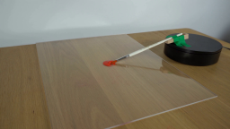
视觉工具实际返回图片 2
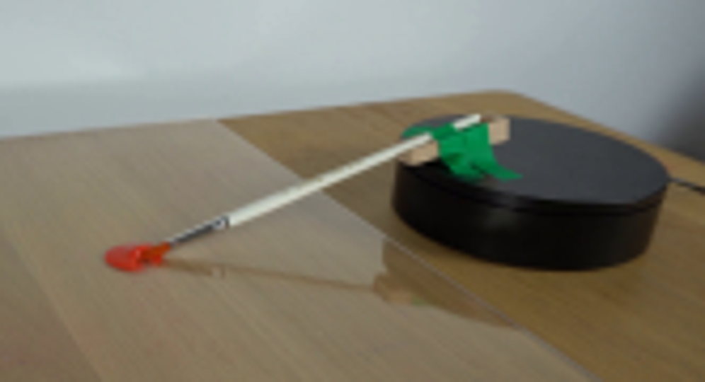
视觉工具实际返回图片 3
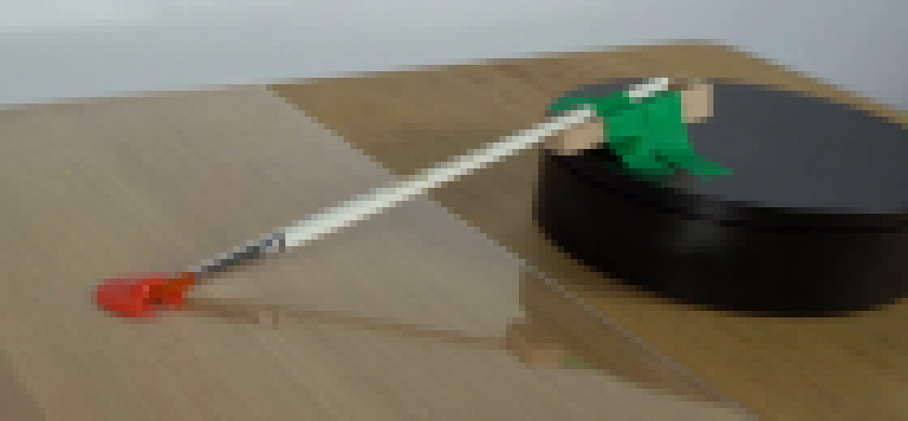
视觉工具实际返回图片 4
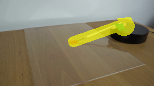
视觉工具实际返回图片 5
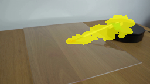
视觉工具实际返回图片 6
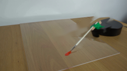
视觉工具实际返回图片 7
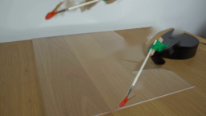
视觉工具实际返回图片 8
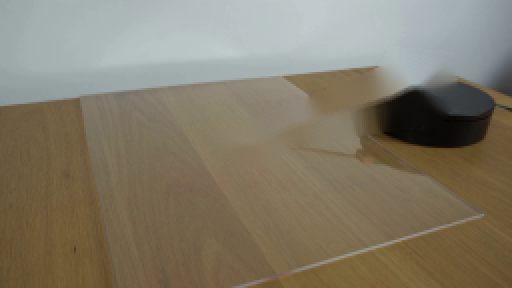
视觉工具实际返回图片 9
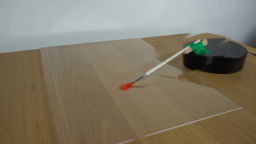
视觉工具实际返回图片 10
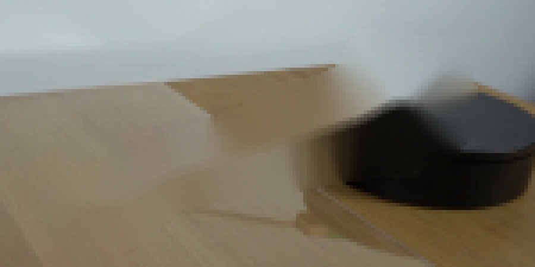
视觉工具实际返回图片 11
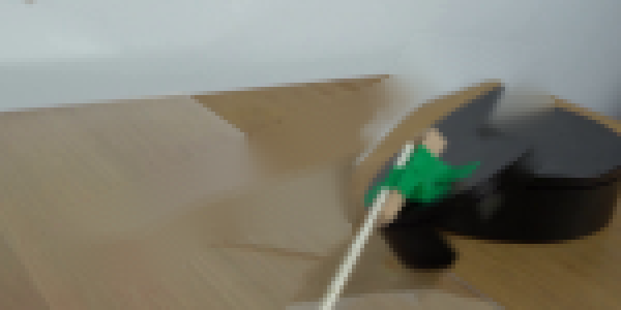
视觉工具实际返回图片 12
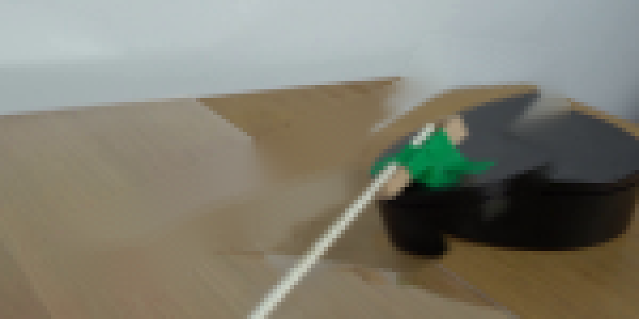
视觉工具实际返回图片 13
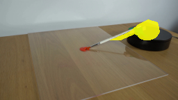
视觉工具实际返回图片 14
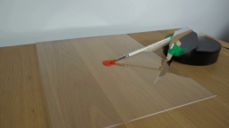
视觉工具实际返回图片 15
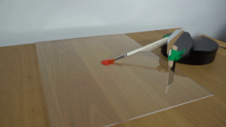
视觉工具实际返回图片 16
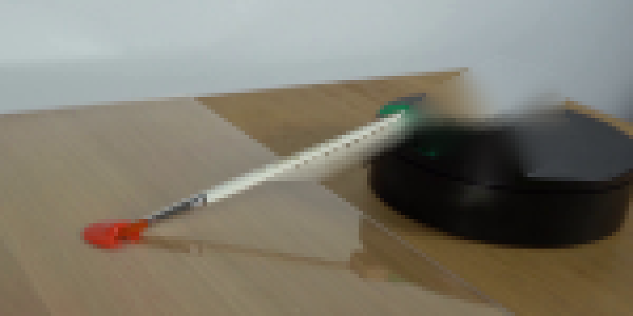
视觉工具实际返回图片 17
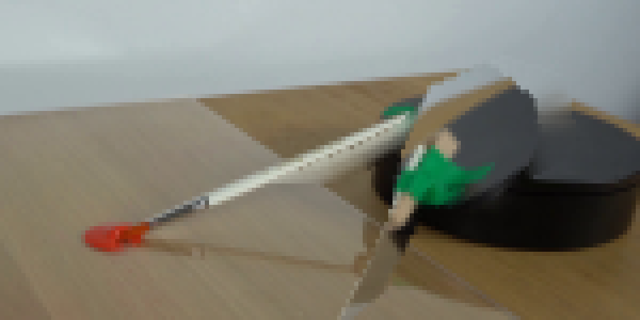
视觉工具实际返回图片 18
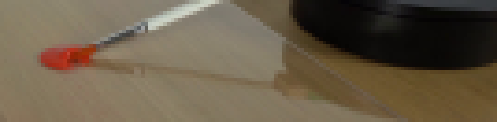
视觉工具实际返回图片 19
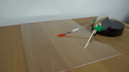
视觉工具实际返回图片 20
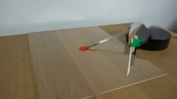
视觉工具实际返回图片 21
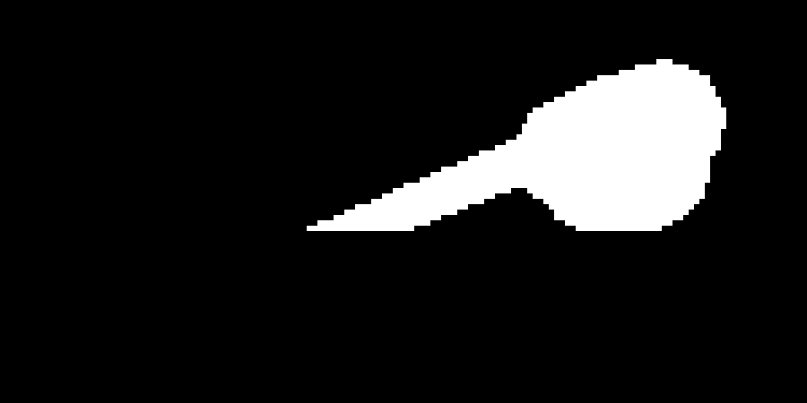
视觉工具实际返回图片 22
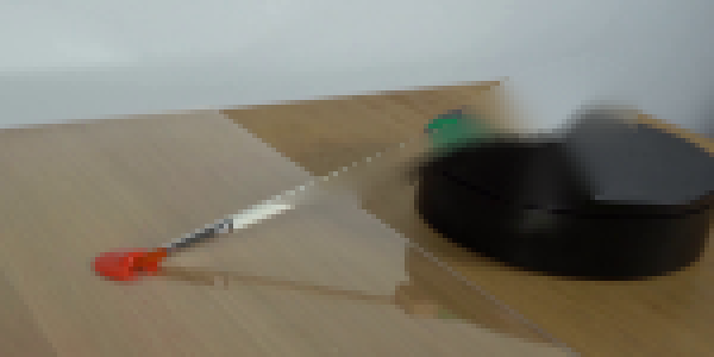
视觉工具实际返回图片 23
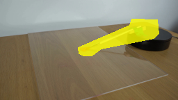
视觉工具实际返回图片 24
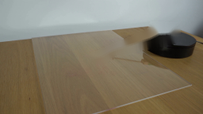
视觉工具实际返回图片 25
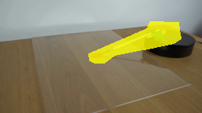
视觉工具实际返回图片 26
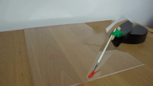
视觉工具实际返回图片 27
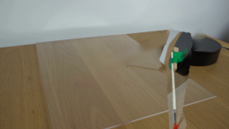
视觉工具实际返回图片 28
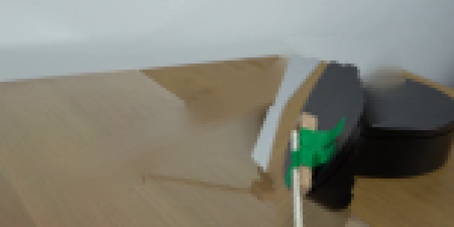
视觉工具实际返回图片 29
视觉工具实际返回图片 30
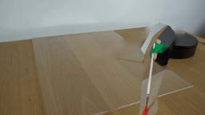
视觉工具实际返回图片 31
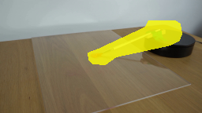
视觉工具实际返回图片 32
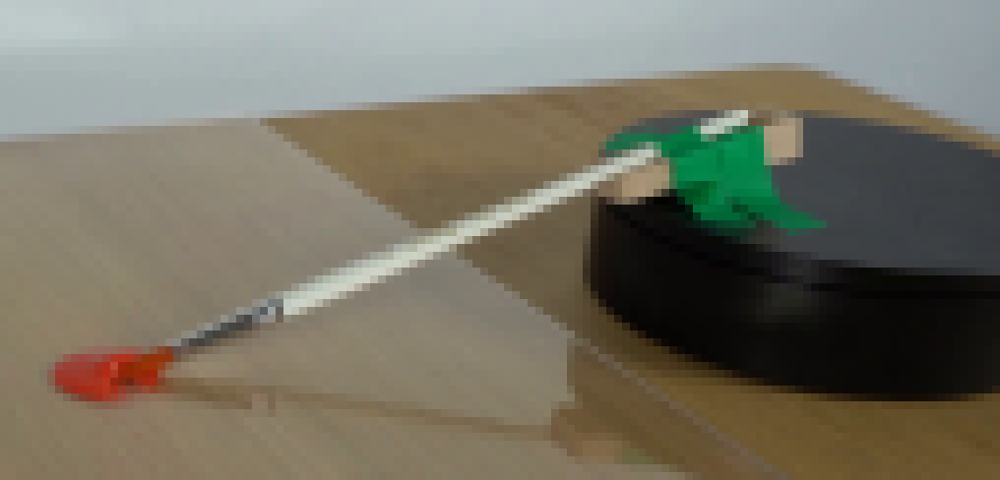
视觉工具实际返回图片 33
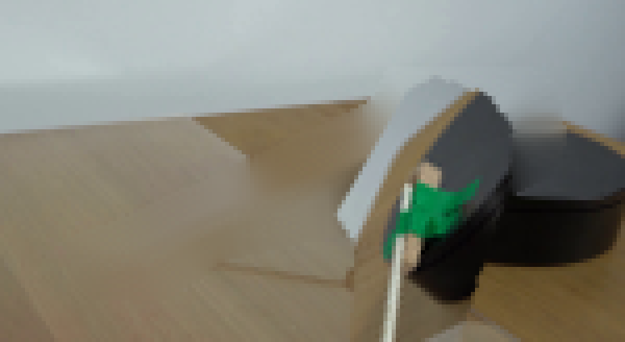
视觉工具实际返回图片 34

视觉工具实际返回图片 35
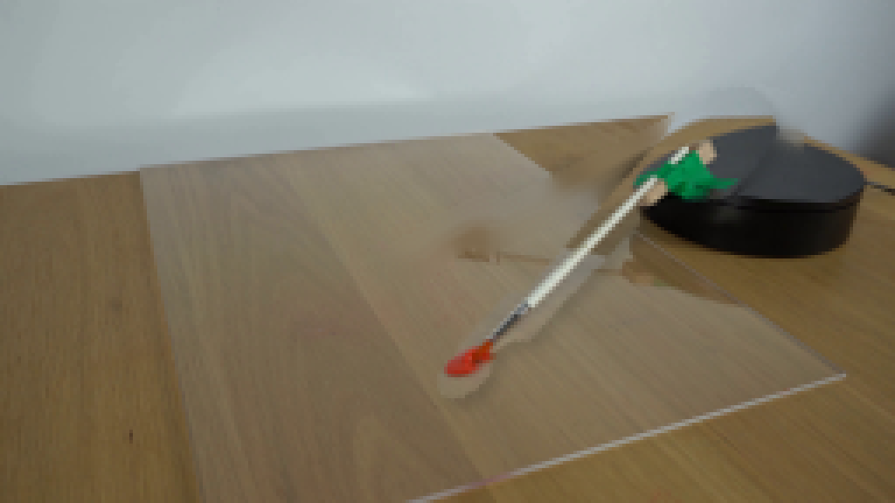
视觉工具实际返回图片 36
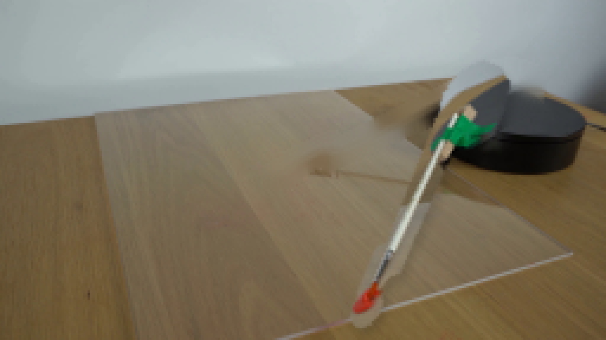
视觉工具实际返回图片 37

视觉工具实际返回图片 38
视觉工具实际返回图片 39
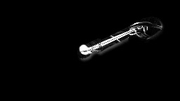
视觉工具实际返回图片 40
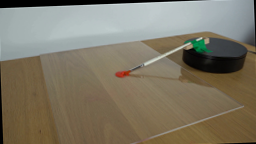
视觉工具实际返回图片 41
视觉工具实际返回图片 42
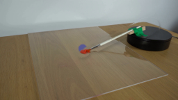
视觉工具实际返回图片 43
视觉工具实际返回图片 44
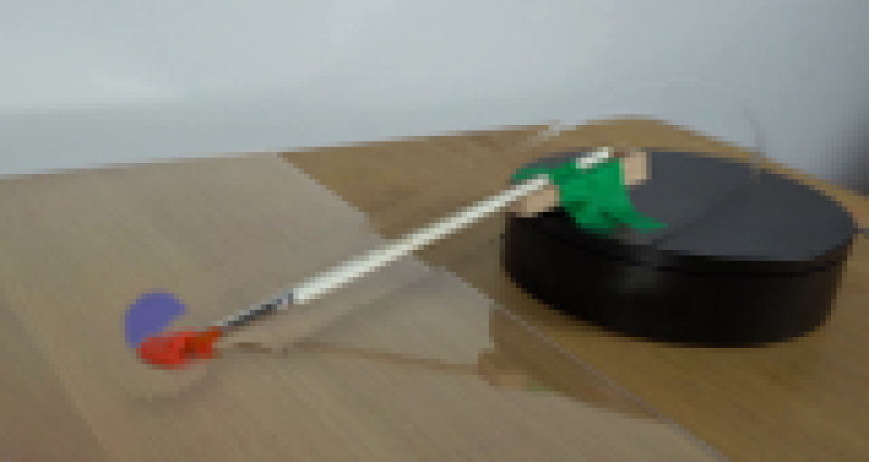
视觉工具实际返回图片 45
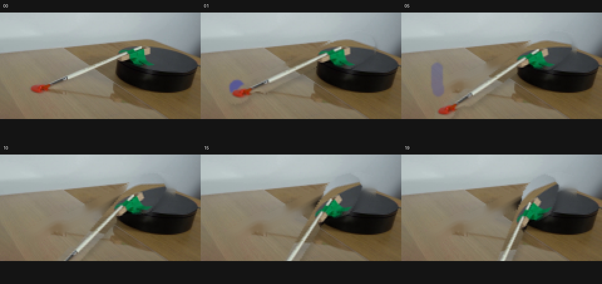
视觉工具实际返回图片 46
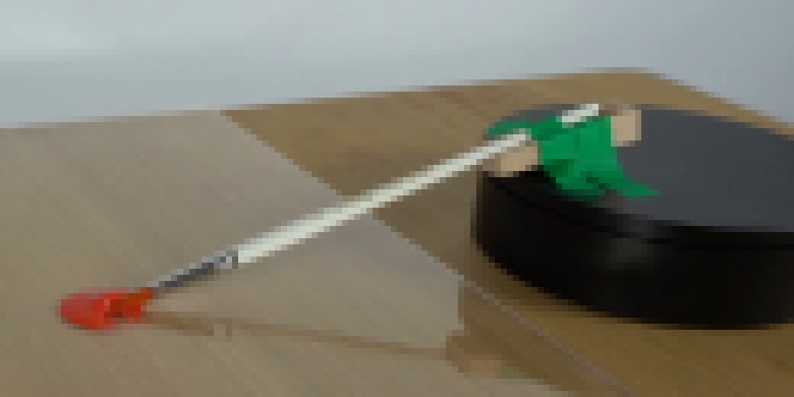
视觉工具实际返回图片 47

保存候选 1 份；完成命令 43 次；可验证图片返回 47 张。原始 API 响应与完整日志保留在本地。